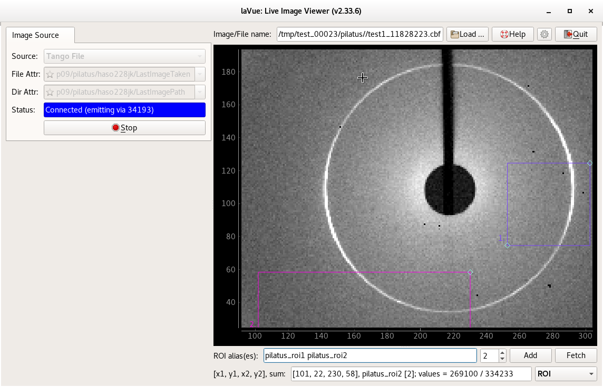

Tango File¶
Images defined by file and directory tango attributes, e.g. Pilatus without Hidra

The Tango File image source frame contains the following fields:
File Attr: selects the tango attributes of the last image file,
e.g. p09/pilatus/haso228k/LastImageTaken or
e.g. p09/pilatus/haso228k/LastImageTaken
The possible file attributes can be preselected in the configuration dialog.Dir Attr: selects the tango attributes of the last image file directory,
e.g. p09/pilatus/haso228k/LastImagePath
The possible file directory attributes can be preselected in the configuration dialog.Status: shows the connection status. It also displays a port of ZMQ security stream if it is enabled.
Start/Stop button to launch or interrupt image querying
The Tango File attribute and Tango Dir attribute contains a string with the file name and its directory in a raw format or file:/ , h5file:/ or http:/, https:/ scheme.